I started playing Minecraft at age 5. My older brother was 10, the normal age to start, and he got me into it. I was too young to really play, but I could observe, and then I could build. Minecraft was my first encounter with systems thinking. You have resources, constraints, rules, and an open-ended goal. The rest is design.
By age 10 I had gone deep into command blocks, the scripting layer underneath the game. Without any tutorials or adult help, I built a working iPhone: a command block circuit where having certain blocks beneath your hitbox would /clone new screen layouts into place. Lock screen, home screen, apps — each screen was a different cloned structure.
Then came the medieval city, the farms, the underground infrastructure. Hundreds of hours of building things nobody asked me to build, purely because the system wasn't good enough yet. That's still how I operate.
No tutorials. No help. A command block circuit board that used /clone commands to swap between phone screens. The chat message in the screenshot is me narrating: "and now we turn off the phone."
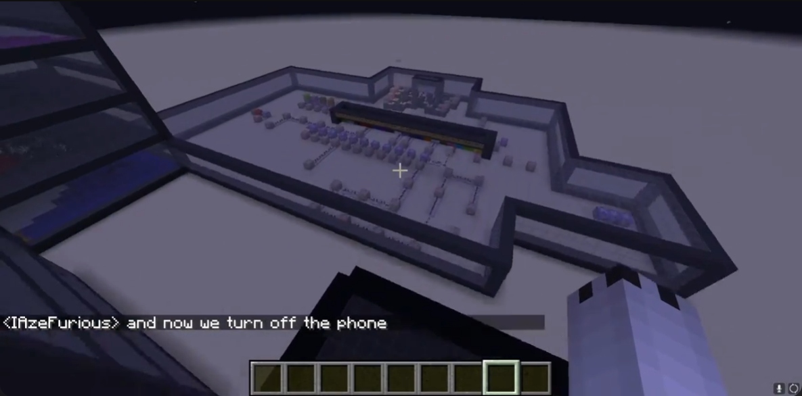
the circuit board — command block logic, age 10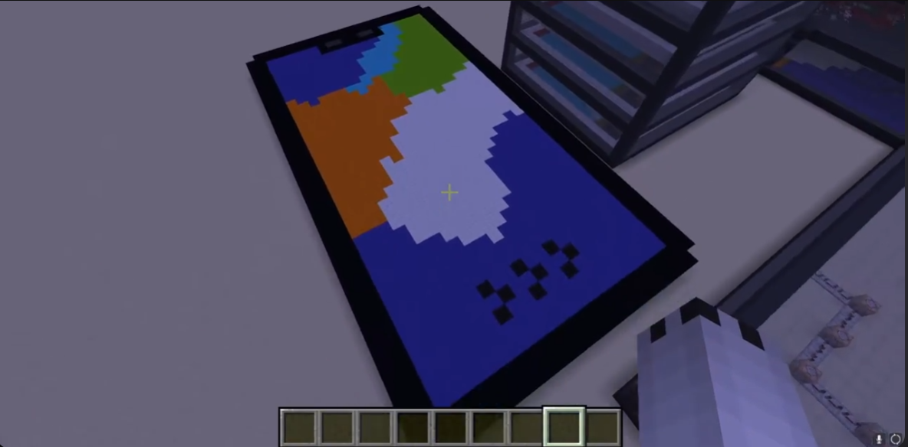
the phone — screen displayed via /cloneA full city built on a peninsula — medieval architecture, themed districts, underground infrastructure. Both aerials are from the same world, different angles.
 aerial 1 — full overhead, peninsula city
aerial 1 — full overhead, peninsula city
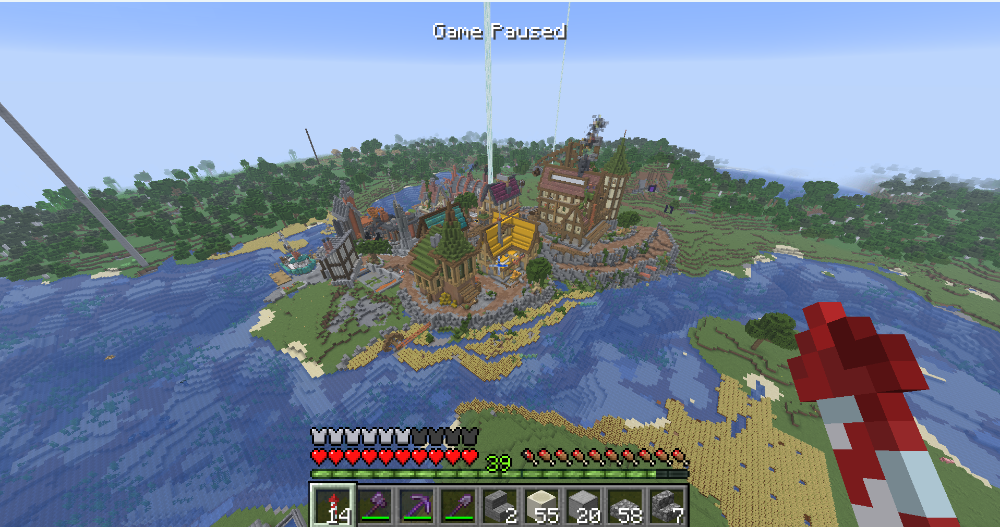
aerial 2 — wider angle, shows surrounding landscape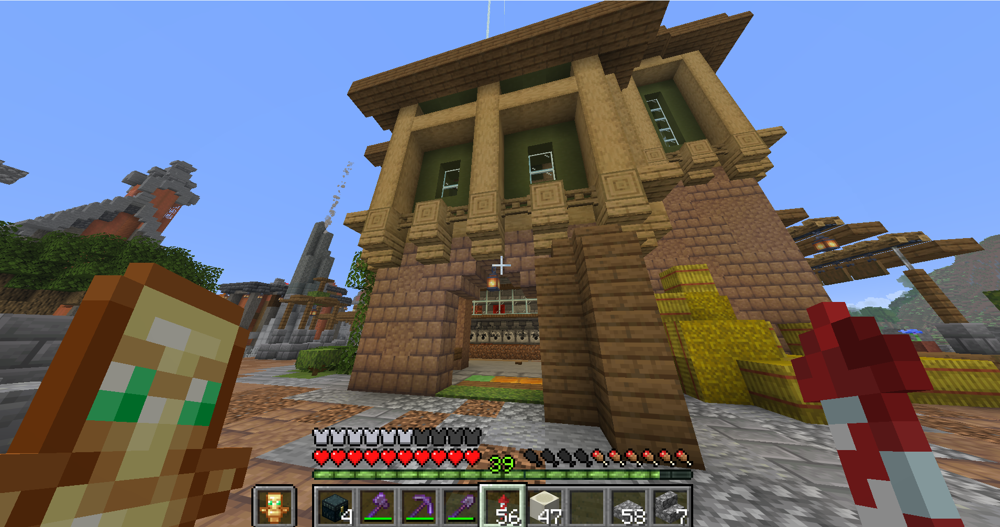
farmhouse exterior — custom redstone door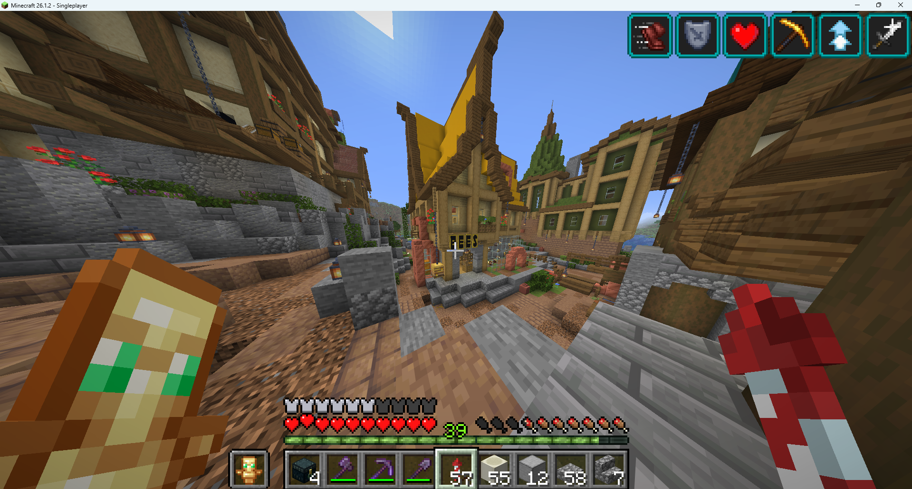
city street — bee shop district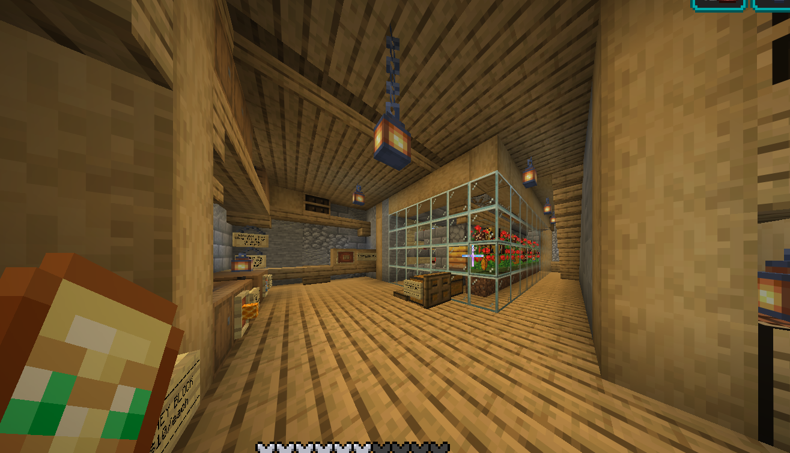
bee farm interior — glass enclosure, flower beds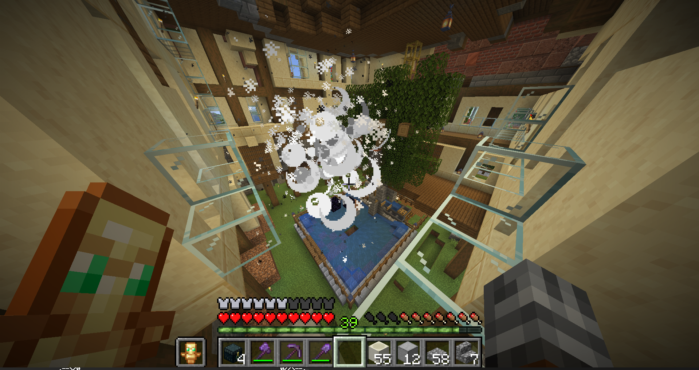
explosion-based tree farm — inside the logger building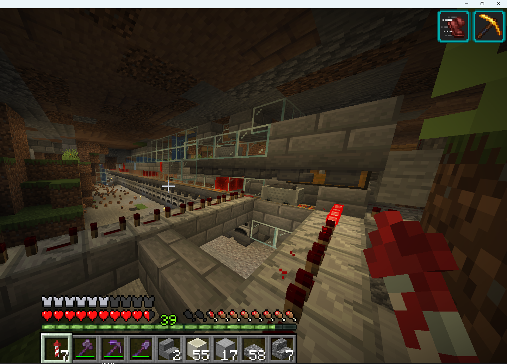
custom super smelter — delocalized, built underneath the cityEvery resource automated. Farms span the overworld, nether, and end — each one designed, built, and integrated from scratch.
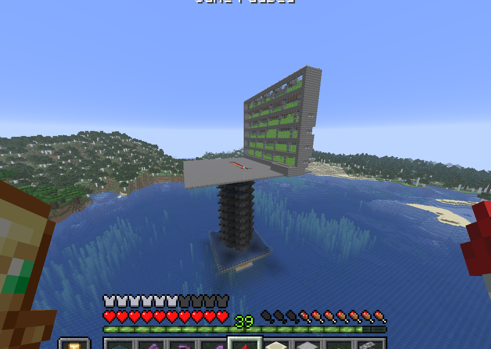
creeper + sugarcane farm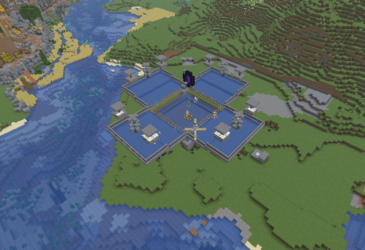
iron golem farm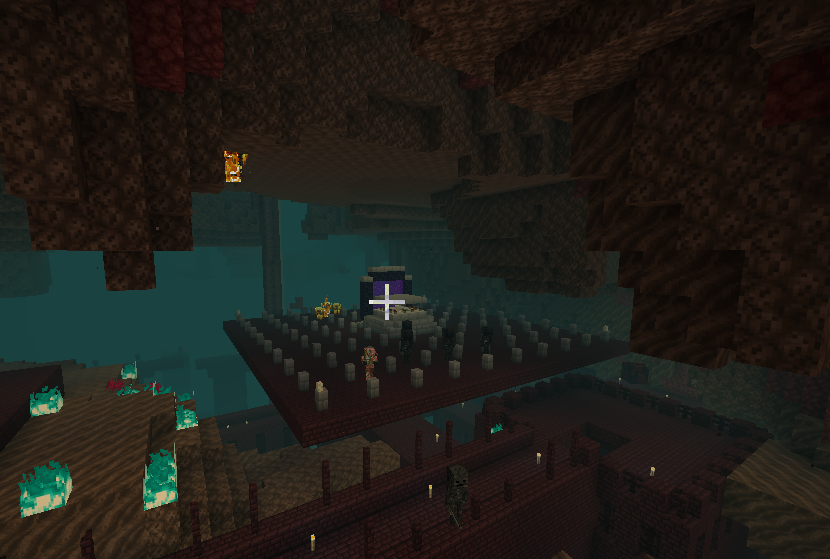
wither skeleton farm — nether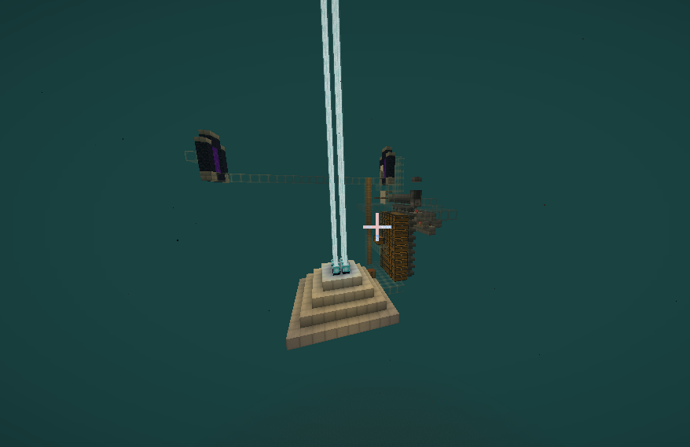
wither skeleton farm — roof view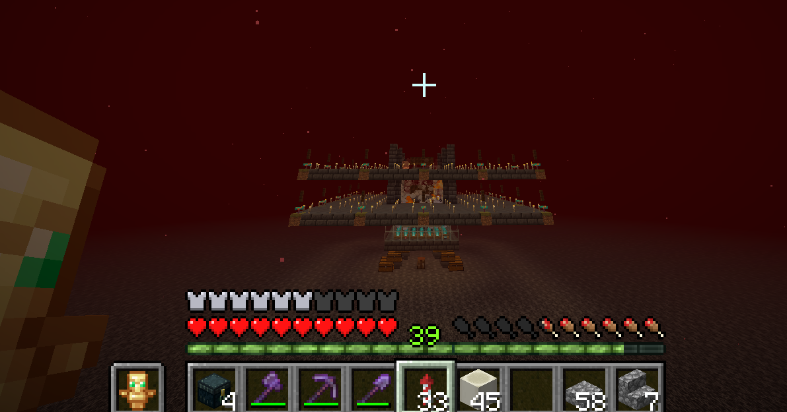
hoglin farm — end dimension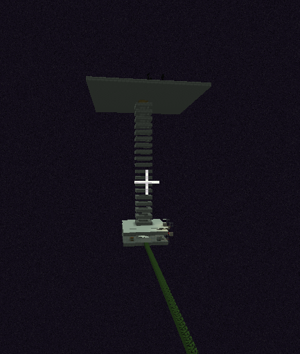
enderman farm — End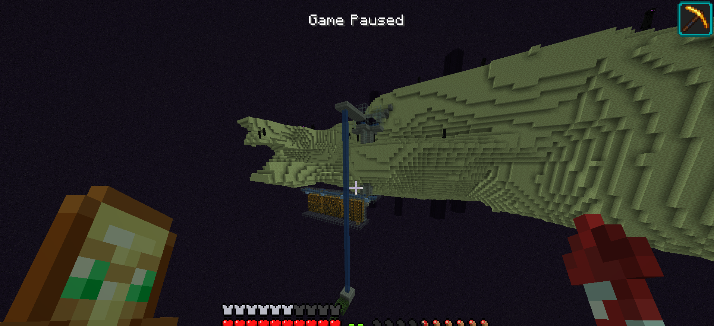
custom sand storage — End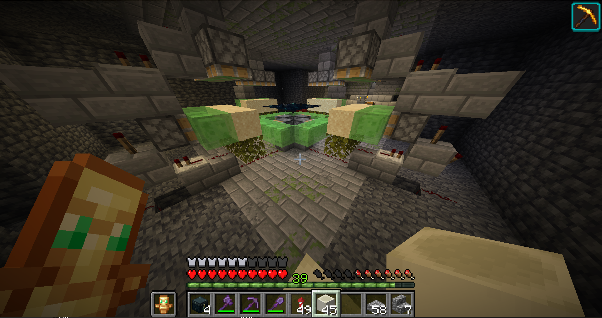
sand duplication mechanismI painted my bedroom door to look exactly like a Minecraft spruce door. Grid by grid, plank by plank, matching the color values as close as I could. It's the first thing I see when I walk into my room.
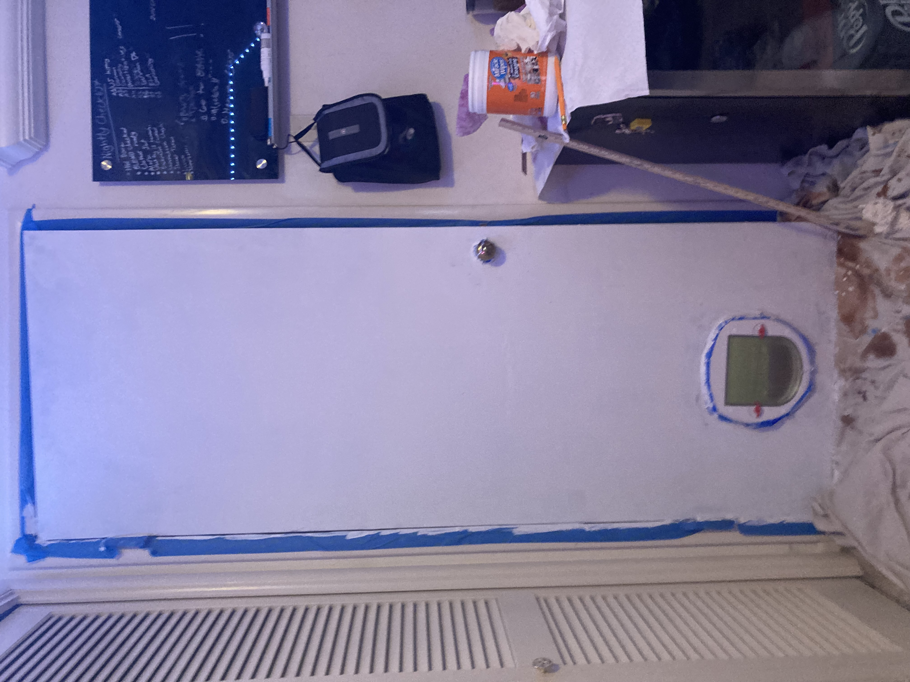
primer only — blank canvas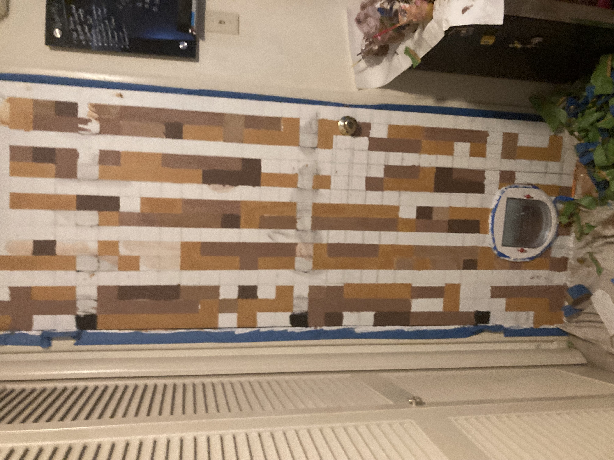
mid-process — some browns in, greys not yet, the pixel grid laid out
finished — spruce door, bedroom Austin TX
"My dream was always to build a house full of gadgets. I can't rip apart my drywall and insert a hidden fireball defense system, but I can build hovercrafts and robotic vehicles."
/clone and pressure plates and a lot of thinking about state. Building a phone that worked — turning screens on and off — required understanding what a program actually does before I had a word for it.
finished door
medieval city — aerial